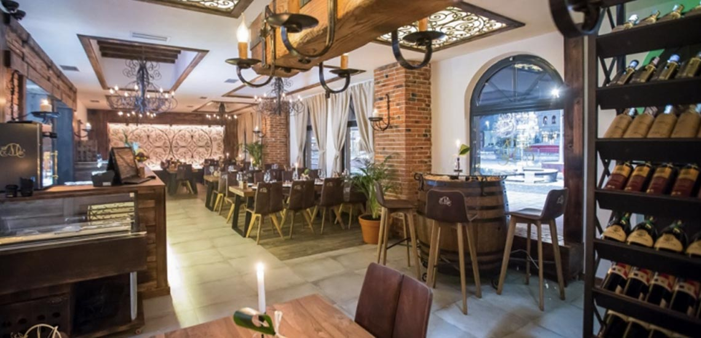
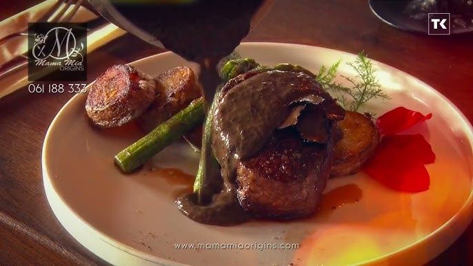

MamaMia Origins jedan je od najboljih restorana u Bosni i Hercegovini. Restoran se nalazi u centru Tuzle, a zbog svog specifičnog jelovnika, koji spaja ono najbolje od kontinentalne i meditaranske kuhinje, zadovoljit će i one najzahtjevnije gurmane. Od raznih jela od teletine, vrhunskih steakova pa sve do tjestenina, rižota i ribljih specijaliteta.